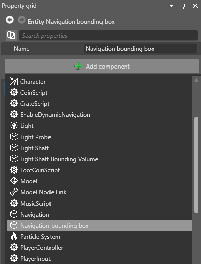

Navigation bounding boxes
Beginner Level designer Programmer
Navigation bounding boxes define the area that navigation meshes cover. You can use them to create smaller navigation areas in your scene, rather than having a mesh cover the entire scene.
The Scene Editor displays the bounding box as a blue outline.

Create a navigation bounding box
To create a navigation bounding box, add a navigation bounding box component to an entity.
In the scene, select the entity you want to contain the bounding box, or create a new entity.
With the entity selected, in the Property Grid, click Add component and select Navigation bounding box.

Game Studio adds a navigation bounding box to the entity.
Under the Navigation bounding box component properties, use the XYZ values to set the size of the bounding box.
Use the entity's transform component to position the bounding box in your scene.
Show or hide the bounding box in the Scene Editor
In the Scene Editor toolbar, open the gizmo options menu and use the Navigation bounding box checkbox.
| Bounding box hidden | Bounding box shown (note blue box outline) |
|---|---|
|